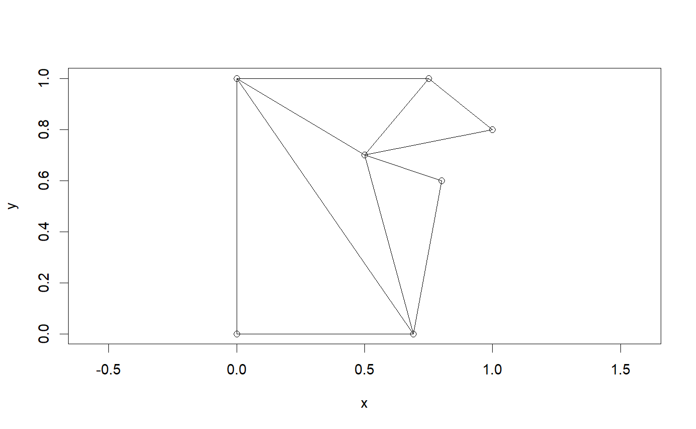
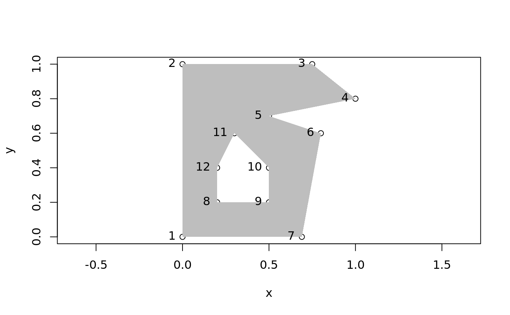
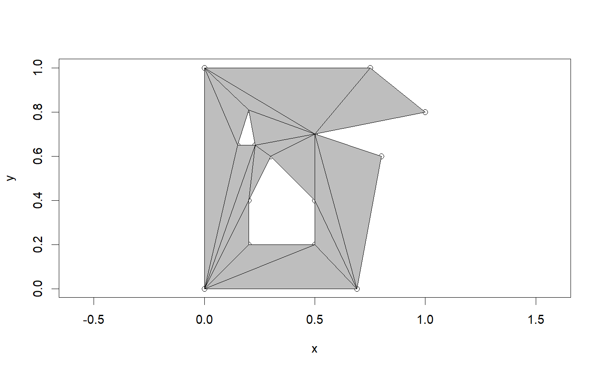
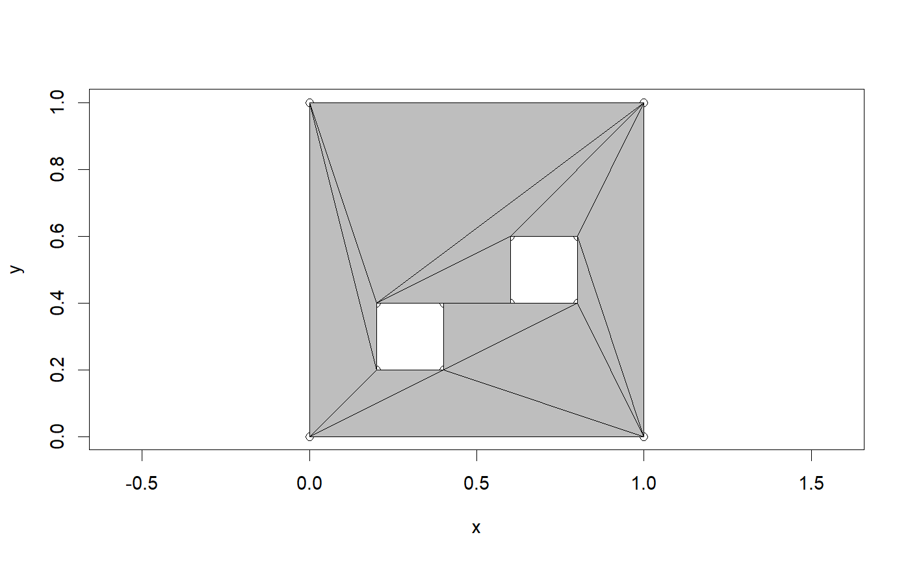
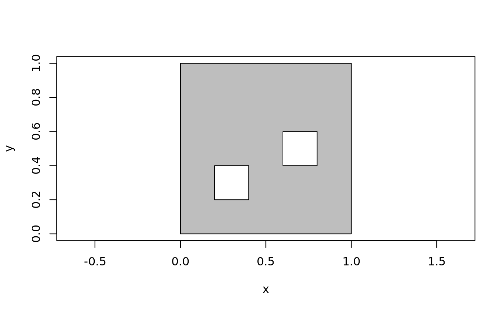
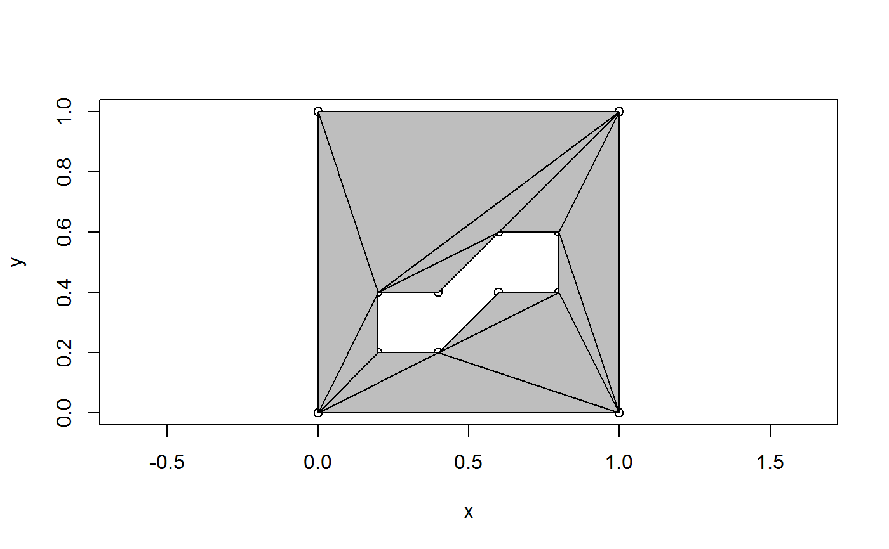
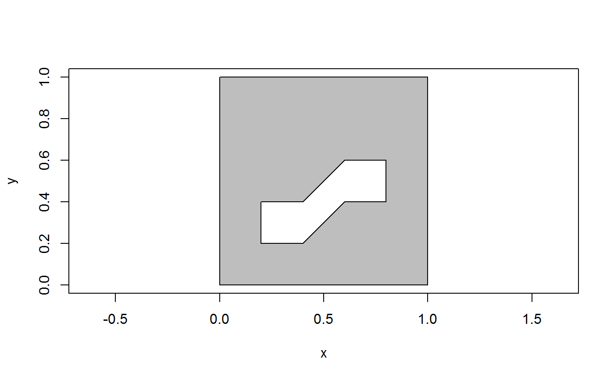

earcut description
earcut(x, y, holes = 0, ...)
| x | x-coordinate |
|---|---|
| y | y-coordinate |
| holes | index of starting position of each hole in x,y, leave set to `0` if no holes |
| ... | unused |
earcut details
x <- c(0, 0, 0.75, 1, 0.5, 0.8, 0.69) y <- c(0, 1, 1, 0.8, 0.7, 0.6, 0) (ind <- earcut(x, y))#> numholes 0#> [1] 2 1 7 7 6 5 5 4 3 2 7 5 5 3 2plot_ears(cbind(x, y), ind)#> NULLx <- c(0, 0, 0.75, 1, 0.5, 0.8, 0.69, 0.2, 0.5, 0.5, 0.3, 0.2) y <- c(0, 1, 1, 0.8, 0.7, 0.6, 0, 0.2, 0.2, 0.4, 0.6, 0.4) ind <- earcut(x, y, holes = 8)#> numholes 1 #> pushback poly 8plot_ears(cbind(x, y), ind)#> NULL## add another hole x <- c(0, 0, 0.75, 1, 0.5, 0.8, 0.69, 0.2, 0.5, 0.5, 0.3, 0.2, 0.15, 0.23, 0.2) y <- c(0, 1, 1, 0.8, 0.7, 0.6, 0, 0.2, 0.2, 0.4, 0.6, 0.4, 0.65, 0.65, 0.81) ind <- earcut(x, y, holes = c(8, 13))#> numholes 2 #> pushback poly 8 #> pushback poly 13plot_ears(cbind(x, y), ind, col = "grey")#> NULL## more than one hole ## but the two inside holes are open to each other ## (so we can use the same data for one hole or two) x <- c(0, 0, 1, 1, 0.4, 0.2, 0.2, 0.4, 0.6, 0.8, 0.8, 0.6 ) y <- c(0, 1, 1, 0, 0.2, 0.2, 0.4, 0.4, 0.6, 0.6, 0.4, 0.4 ) plot(x, y, type = "n")#> numholes 2 #> pushback poly 5 #> pushback poly 9plot_ears(cbind(x, y), ind, col = "grey")#> NULL#> numholes 1 #> pushback poly 5plot_ears(cbind(x, y), ind, col = "grey")#> NULL